01. Overview
Traditional BI tools assume specialized expertise and high budgets. IntelliDash is a concept designed to bridge this gap, letting SMB owners upload spreadsheet datasets, query them in plain English, and receive clean, inspectable SQL outputs alongside automated reports.
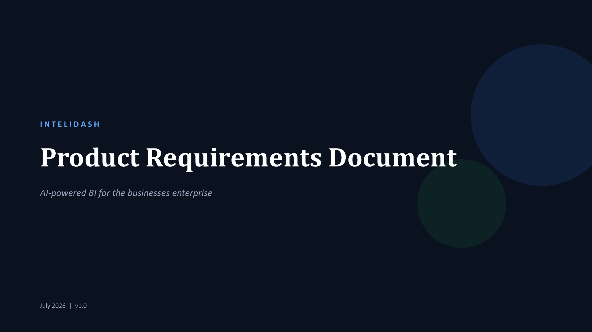
02. The Problem
Small and medium businesses accumulate valuable sales and transaction data, but they lack the technical resources to query it. Power BI and Tableau are over-built and require dedicated analysts, meaning raw CSV spreadsheets go unopened and every business question requires a database person.
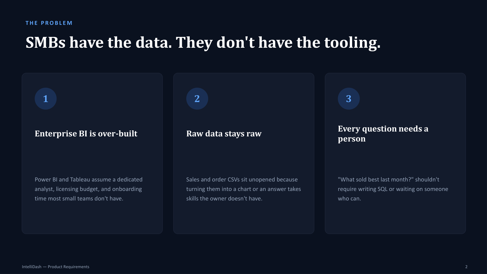
03. Market & Users
Identifying the massive market of Indian and international SMBs, and building for the primary persona of a non-technical freelance designer or shop owner who needs fast answers without learning SQL:
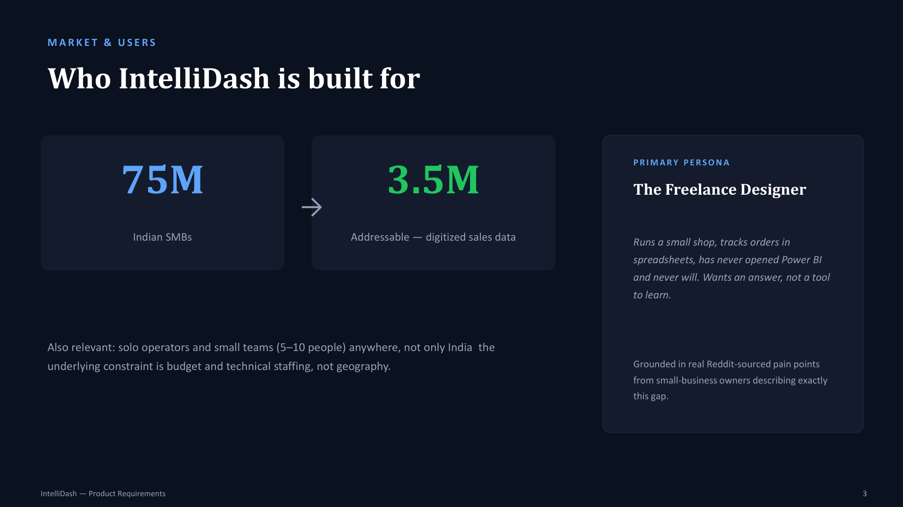
04. Product Overview
Defining IntelliDash's four core pillars: drag-and-drop upload, natural language queries, automated visualizations, and exportable reports.
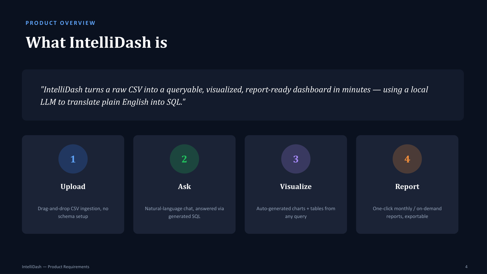
05. User Flow
Mapping the journey from CSV upload to plain-English questioning, local SQL generation, and instant chart-and-table rendering:
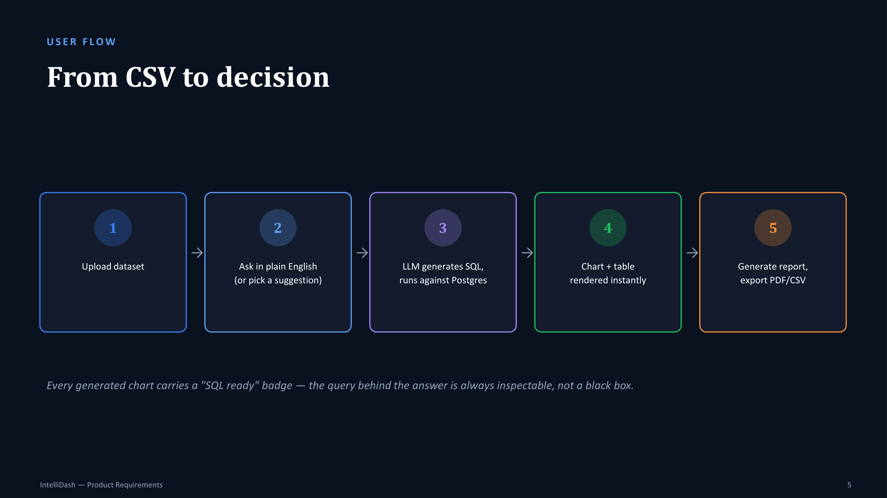
06. Data Ingestion & AI Chat
Eliminating blank-page friction by displaying active session panels and offering pre-seeded query suggestions:
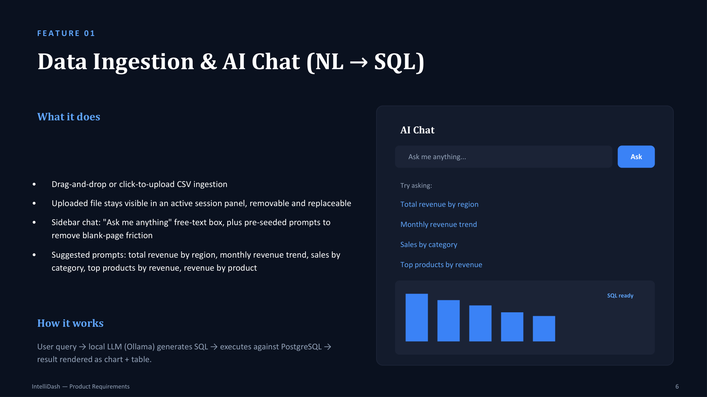
07. Dashboard & Visualizations
Designing auto-generating bar charts that pair visual trends with the raw underlying data table:
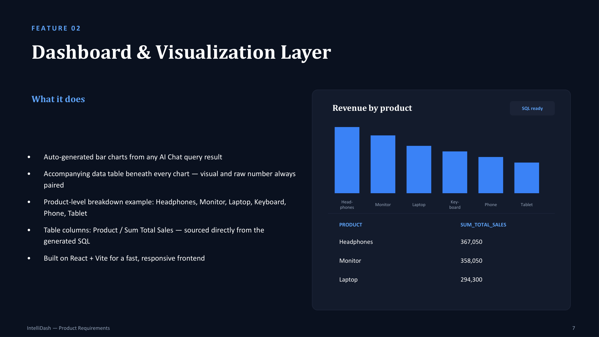
08. Reports Module
Compiling KPI summaries, category distributions, and automated anomaly detection into exportable on-demand sales reports:
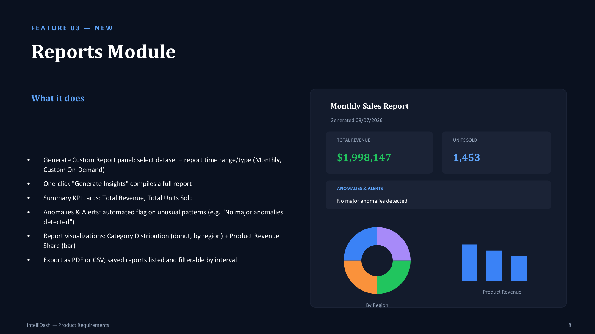
09. Technical Architecture
Isolating long-running LLM inferences in FastAPI with a three-tier system design, and selecting PostgreSQL to ensure highly structured relational SQL output:
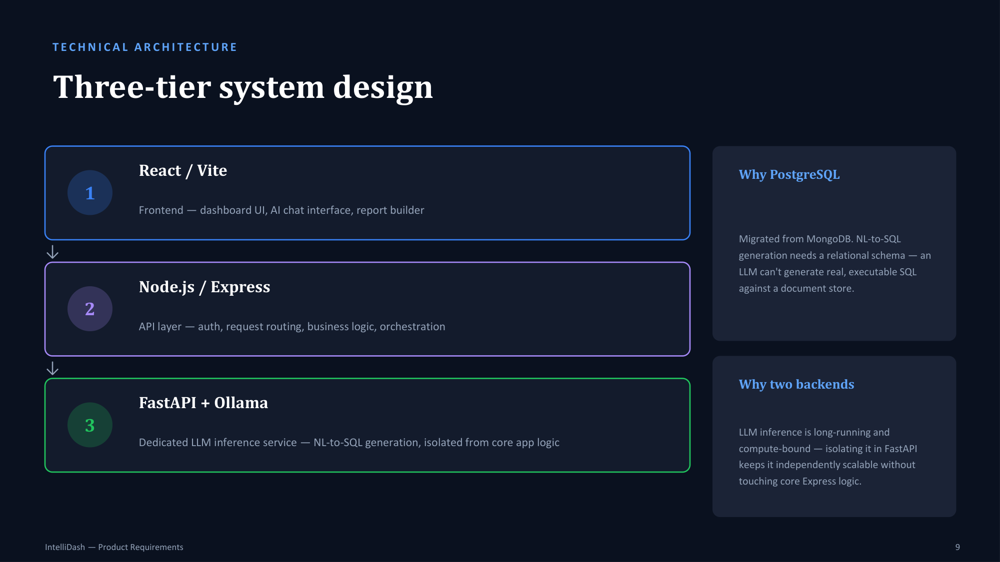
10. Product Positioning
Focusing on zero setup, AI-native querying, and accessibility for small teams rather than competing with enterprise BI pricing:
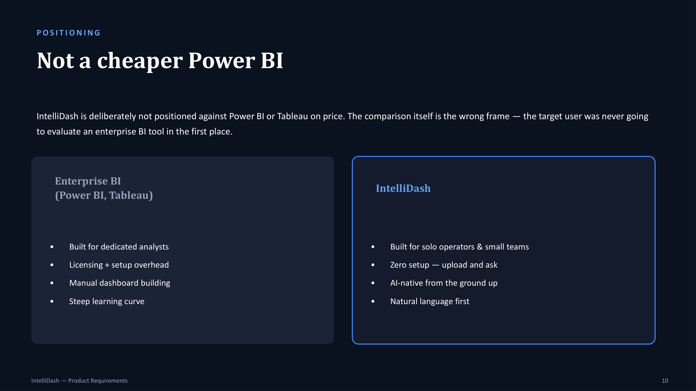
11. Prototype Status
Assessing the current working prototype status honestly, establishing validation against synthetic datasets, and defining initial user testing goals:
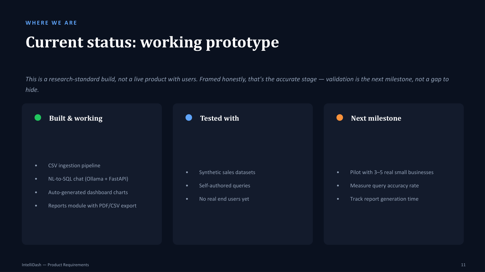
12. What's Next
Detailing the phased rollout plan from initial small business pilots to hardening the query engine and scaling to cloud endpoints:
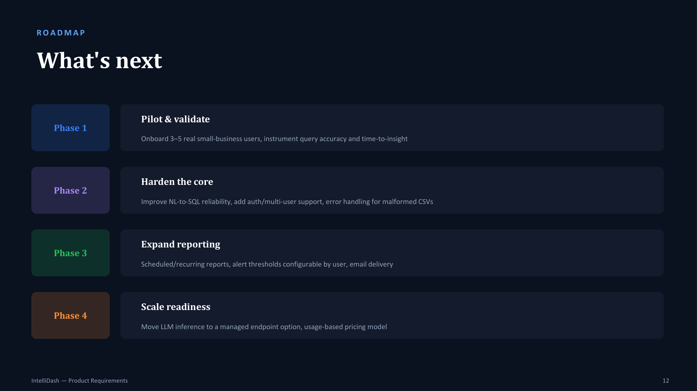